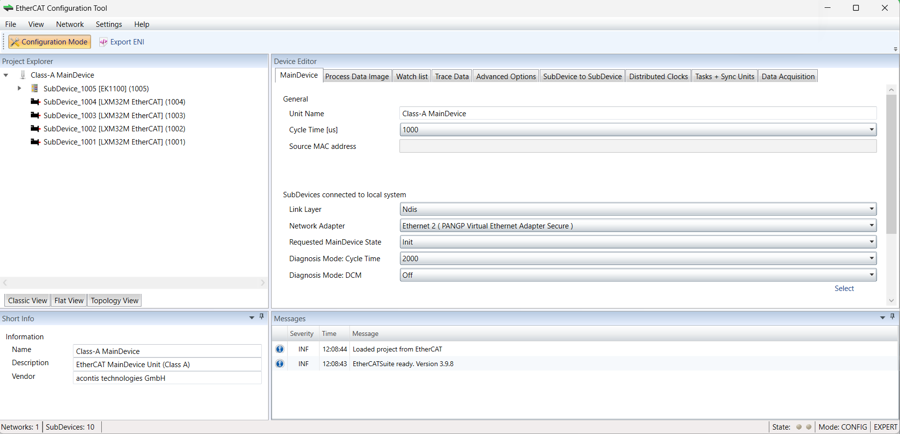
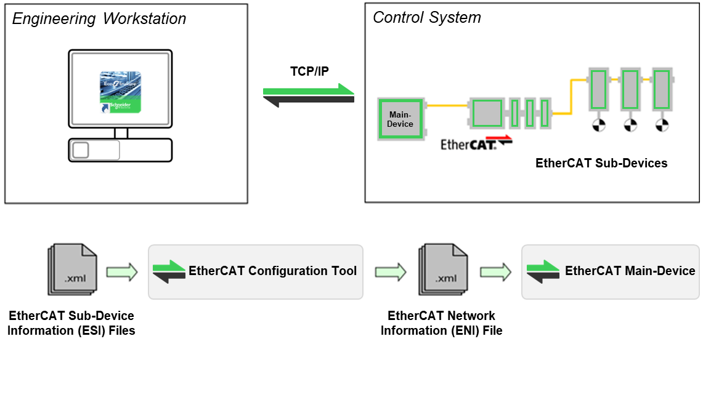

EtherCAT Configuration Tool is a configuration and diagnosis tool for EtherCAT networks that are controlled by the EtherCAT Main-Device.
The following image shows the EtherCAT Configuration Tool in configuration mode:

It runs on the engineering workstation used in EcoStruxure Automation Expert to configure:
The EtherCAT network.
All Sub-devices default to settings that match the Sub-device’s typical use case.
Complex networks or installations with special requirements need adjustments to the default settings.
Using EtherCAT Configuration Tool, you can then configure the EtherCAT network according to the needs of your project.
As a result, you can export the EtherCAT Network Information (ENI) file, which is necessary to finish the configuration of the EtherCAT network on EcoStruxure Automation Expert and eventually run the EtherCAT Main-Device on the Control System:

If you connect your engineering workstation to the Control System, you can also scan your existing EtherCAT network. The EtherCAT Configuration Tool then read the network configuration and add all Sub-devices to the project explorer. Next, you can fine tune the network or directly export the ENI file.
Here are the requirements to use EtherCAT Configuration Tool:
Microsoft Windows 10 and above
Microsoft .NET Framework 4 Client Profile
Screen resolution at least 1024x768 pixel
Disk space approximately 80 MB (depend on number of ESI files)
The EtherCAT Configuration Tool needs information about each Sub-device type to:
Initialize the Sub-devices.
Give default settings to the Sub-devices.
Present you the configurable properties of the Sub-devices.
The knowledge about the different Sub-device types is gathered in the ESI files.